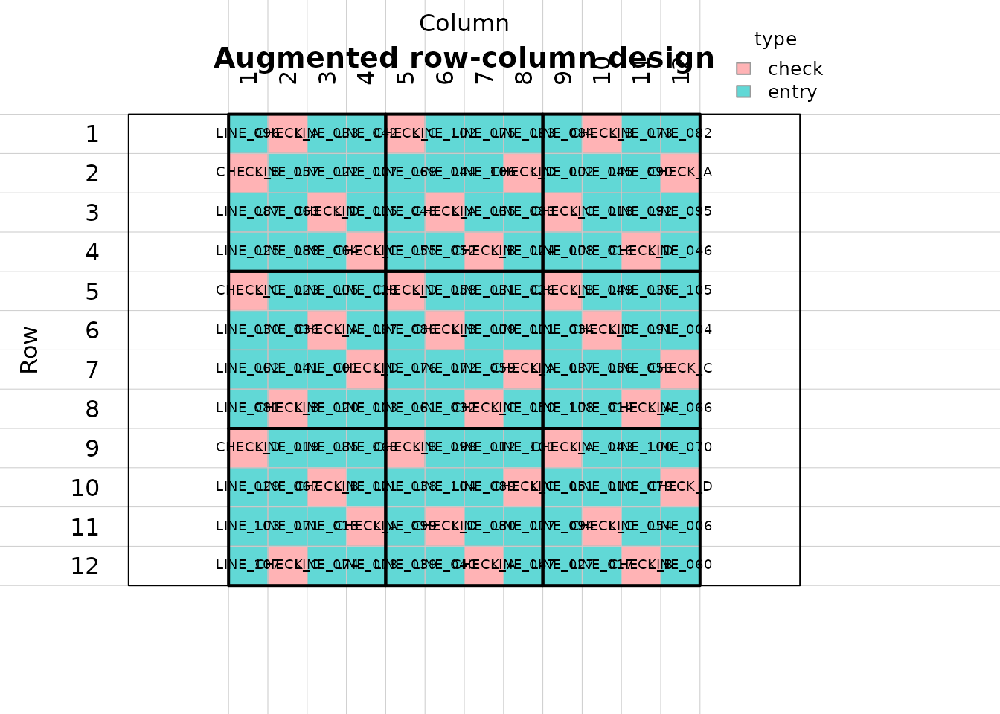

Getting started: one trial from planning to saved results
Source:vignettes/getting-started.Rmd
getting-started.RmdThis tutorial follows one augmented row-column trial from planning to Field Book collection, phenotypes, analysis and saved results. The executed examples use simulated observations and local files. Connection and upload chunks are shown but not executed: adapt them to your own database.
Connect → check names → design → export field and traits → collect → save phenotypes → analyse → save results
library(breedtools)
trial_name <- "AYT_2026_Ibadan"
location <- "Ibadan"
trait <- "fresh root yield"
entries <- sprintf("LINE_%03d", 1:108)
checks <- c("CHECK_A", "CHECK_B", "CHECK_C", "CHECK_D")1. Connect and check database names
Skip this step to try the example offline. For a real trial, replace the example names with existing accessions, location, program, folder and trait names in your Breedbase site. Omit the password to enter it privately.
con <- breedbase_login("https://your-breedbase.org", username = "your_username")
breedbase_programs(con)
breedbase_locations(con)
breedbase_folders(con, program = "Your breeding program")
breedbase_check(con, accessions = c(entries, checks), location = location,
program = "Your breeding program", folder = "AYT 2026",
trial_name = trial_name)Resolve any missing names or existing trial-name conflicts before saving.
2. Design and save the trial
Our 12 × 12 field holds 108 test entries and 36 check plots. Each 4 × 4 block contains the four checks. The seed makes the layout reproducible.
rc <- augmented_row_column_design(
treatments = entries, controls = checks,
rows_in_field = 12, cols_in_field = 12,
rows_per_block = 4, cols_per_block = 4, seed = 2026
)
check_design(rc)
#> Checking the augmented row-column design
#> [OK] every plot used exactly once
#> [OK] every entry planted exactly once
#> [OK] every field row has a check
#> [OK] every field column has a check
#> [OK] check plots per block as requested
#> [OK] error df > 0 (6)
#> [OK] row, column and block effects estimable from the checks
#> [OK] checks spread evenly in each block (every check in full blocks)
#> [OK] even numbers of check plots in the rows and columns of each group
#> [OK] every check in each row and column with room for all checks
#> [OK] no checks next to each other inside a block (0 pairs)
#> [OK] no checks next to each other across block boundaries (0 pairs)
#> [OK] no check twice in a field row or column
plot_augmented_row_column_design(rc)
Preview the trial locally. No database is changed by a dry run.
payload <- save_breedbase(
rc, trial_name = trial_name, year = 2026, location = location,
program = "Your breeding program", folder = "AYT 2026",
description = "Advanced yield trial", dry_run = TRUE
)
#> Dry run without a connection: returning the data that would be sent.For a real trial, validate against the database and then save:
save_breedbase(rc, con, trial_name = trial_name, year = 2026,
location = location, program = "Your breeding program", folder = "AYT 2026",
description = "Advanced yield trial", dry_run = TRUE)
save_breedbase(rc, con, trial_name = trial_name, year = 2026,
location = location, program = "Your breeding program", folder = "AYT 2026",
description = "Advanced yield trial")3. Export field and trait files for offline collection
phenotype_template() gives the plots the same names as
the database upload. Leave its traits argument empty for a
Field Book field file; measurements are defined separately by
trait_template().
output_dir <- tempdir() # use a persistent folder for your real trial
field <- phenotype_template(rc, trial_name, location = location)
field_file <- file.path(output_dir, "AYT_2026_Ibadan.csv")
write.csv(field, field_file, row.names = FALSE, na = "")
traits <- trait_template(
trait, minimum = 0, details = "Fresh root yield in t/ha",
output_file = file.path(output_dir, "AYT_traits.trt")
)
head(field)
#> # A tibble: 6 × 9
#> plot_name trial_name accession plot_number block rep row col is_check
#> <chr> <chr> <chr> <int> <int> <int> <int> <int> <lgl>
#> 1 AYT_2026_Ib… AYT_2026_… LINE_096 1 1 1 1 1 FALSE
#> 2 AYT_2026_Ib… AYT_2026_… CHECK_A 2 1 1 1 2 TRUE
#> 3 AYT_2026_Ib… AYT_2026_… LINE_033 3 1 1 1 3 FALSE
#> 4 AYT_2026_Ib… AYT_2026_… LINE_042 4 1 1 1 4 FALSE
#> 5 AYT_2026_Ib… AYT_2026_… CHECK_C 5 2 2 1 5 TRUE
#> 6 AYT_2026_Ib… AYT_2026_… LINE_102 6 2 1 1 6 FALSE
traits
#> # A tibble: 1 × 9
#> trait format defaultValue minimum maximum details categories isVisible
#> <chr> <chr> <chr> <chr> <chr> <chr> <chr> <chr>
#> 1 fresh root y… numer… "" 0 "" Fresh … "" true
#> # ℹ 1 more variable: realPosition <int>Transfer these files to the Android device by USB or your preferred file transfer method. No mobile BrAPI connection is required.
- In Field Book’s Fields, import the CSV. Select
plot_nameas the unique identifier,rowas primary andcolas secondary identifier. For designs without coordinates, useplot_numberandaccessionfor navigation instead. Plot names must be unique across your fields. - In Traits > Import/Export, import
AYT_traits.trt. These definitions configure the app; they do not create ontology terms in Breedbase. - Collect the measurements offline.
- Export in Table format with all imported
columns, including
plot_name, and transfer the resulting CSV back to your computer.
The app’s field,
trait
and export
documentation explains these options. Table format retains only the
first repeated measurement. For repeated observations, use Database
format and map its plot, trait, value and timestamp columns explicitly
in save_breedbase_phenotypes().
4. Read and save the phenotypes
For this walkthrough, simulate a completed field sheet and write it to CSV. In practice, use the file exported by Field Book instead.
set.seed(2026)
observed <- field
observed[[trait]] <- round(rnorm(nrow(field), mean = 25, sd = 3), 2)
observations_file <- file.path(output_dir, "AYT_2026_Ibadan_observed.csv")
write.csv(observed, observations_file, row.names = FALSE, na = "")Preserve trait names, including spaces, when reading. Read identifiers as text so they are not reformatted. Select measurement columns explicitly so metadata added by the app is not treated as a trait.
observed <- read.csv(observations_file, check.names = FALSE,
colClasses = "character", na.strings = c("", "NA"))
observations <- save_breedbase_phenotypes(observed, traits = trait, dry_run = TRUE)
#> Dry run without a connection: returning the observations that would be sent.The trial’s plots and the trait must already exist before uploading:
save_breedbase_phenotypes(observed, con, traits = trait, dry_run = TRUE)
save_breedbase_phenotypes(observed, con, traits = trait)5. Analyse the collected observations
Match on plot_name rather than relying on the CSV row
order. This also keeps design columns in their original types for
analysis.
stopifnot(!anyDuplicated(observed$plot_name),
setequal(observed$plot_name, field$plot_name))
values <- as.numeric(observed[[trait]][match(field$plot_name, observed$plot_name)])
design_rows <- match(rc$design$plots, field$plot_number)
analysis_data <- rc$design
analysis_data$yield <- values[design_rows]
fit <- analyze_augmented_row_column_design(analysis_data, response = "yield")
head(fit$adjusted_means)
#> # A tibble: 6 × 8
#> rank genotype type is_control n_observations raw_mean adjusted_mean
#> <int> <chr> <chr> <int> <int> <dbl> <dbl>
#> 1 1 LINE_006 entry 0 1 32.9 37.5
#> 2 2 LINE_046 entry 0 1 26.8 35.9
#> 3 3 LINE_004 entry 0 1 24.6 34.3
#> 4 4 LINE_060 entry 0 1 26.8 33.7
#> 5 5 LINE_082 entry 0 1 22.8 33.3
#> 6 6 LINE_095 entry 0 1 28.5 33.1
#> # ℹ 1 more variable: std_error <dbl>For real observations, investigate unexpected values and missing
plots before fitting. plot_trait() and
find_outliers() can help.
6. Save the analysis results
Convert the adjusted means into the standard format and preview them locally. This stores genotype means as a Breedbase analysis.
means <- second_stage_values(fit, trait = trait)
analysis_payload <- save_breedbase_analysis(
means, analysis_name = paste0(trial_name, "_means"),
program = "Your breeding program",
description = "Adjusted means from the row-column model", dry_run = TRUE
)
#> Dry run without a connection: returning the upload that would be sent (trait names and the statistic are completed from Breedbase when connected).
save_breedbase_analysis(means, con, analysis_name = paste0(trial_name, "_means"),
program = "Your breeding program",
description = "Adjusted means from the row-column model", dry_run = TRUE)
save_breedbase_analysis(means, con, analysis_name = paste0(trial_name, "_means"),
program = "Your breeding program",
description = "Adjusted means from the row-column model")For adjusted plot-level values, see first_stage_values()
and save_breedbase_first_stage(). The full
vignette("breedtools") covers other designs, spatial models
and analyses across locations.